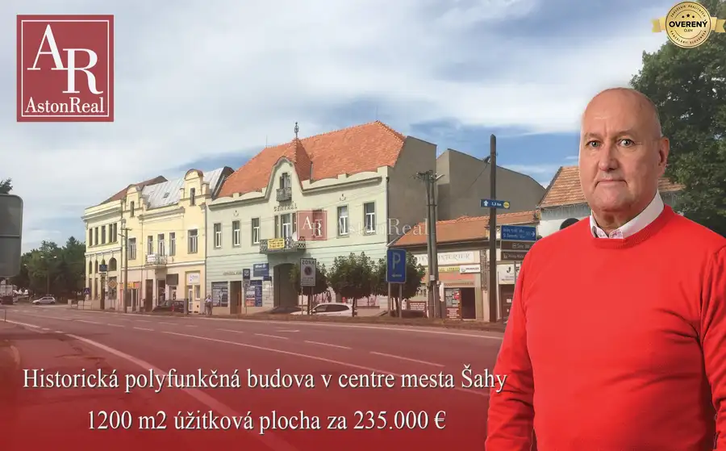
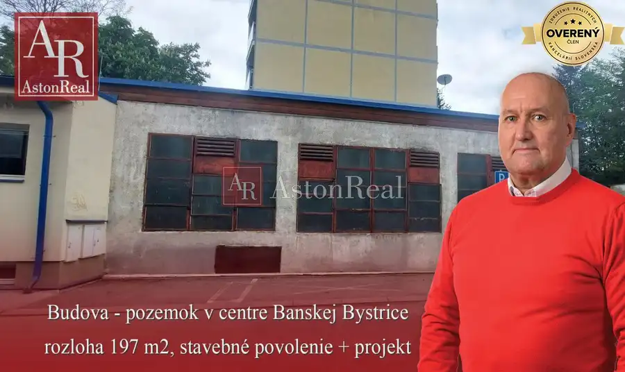
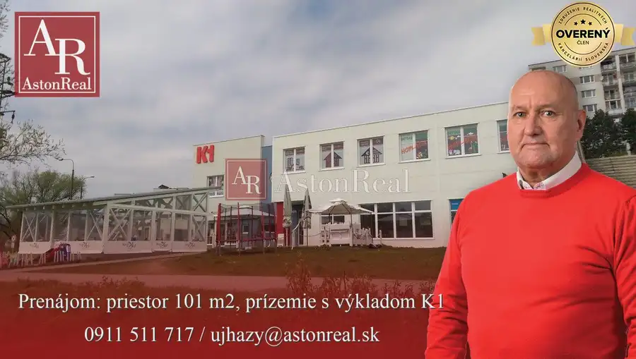

NA PREDAJ: Veľký dom - 3 byty, pivnica, dielňa, sklad, pozemok
Lieskovec
- Dispozícia9-izbový
- Plocha360 m²
- Poschodie0. z 1
- Stavpo rekonštrukcii
- Vlastníctvoosobné
O nehnuteľnosti
AstonReal ponúka na predaj exkluzívne dvojdom - dva domy, dve súpisné čísla, 3 bytové jednotky - dve z nich momentálne v prenájme, na pozemku: 487 m2, úžitková plocha cca 315 m2 + 66 m2 vlastné parkovanie pred domom. Super lokalita: LIESKOVEC, 5 minúť autom do centra ZV.
Znalecký posudok na nehnuteľnosť zo 07/2025, určená všeobecná hodnota: 343 000,00€.
Základne informácie:
- pozemok rozloha: 487 m2
- zastavaná plocha dvoch domov aj s parkovaním: 310 m2
- zastavaná plocha samotného domu č. 1: 114 m2
- zastavaná plocha samotného domu č. 2: 130 m2
- úžitková plocha: cca 315 m2
- prístup autom až na pozemok, nádvorie - 177 m2, parkovanie pre 2 autá pred domom - 66 m2
- rodinné domy postavené v roku 1965, po rekonštrukcii v užívaní od roku 2022 - kolaudácia 03/2023
- dielňa + kotolňa - plyn, podlaha betón, pivnica
- veranda 10 m2
- elektrika: 230/400 V
- obecná voda - verejný vodovod
- napojenie na obecnú kanalizáciu
- kúrenie - plyn, ohrev vody elektrika - bojler v každom byte
- plastové okná nové od roku 2022
- strecha: pálená škridla od roku 2022
Možnosti využitia domu:
- investičná možnosť - ako doteraz, prenájom 3 bytov - možný príjem: min. 2000€ / mes.
- sídlo firmy + bývanie, alebo prenájom
- klasické bývanie - aj viacgeneračné
- možnosť prikúpiť stodolu, priľahlé pozemky - intravilán - super lokalita.
Pri rýchlom jednaní, alebo platba v hotovosti - dohoda istá.
Uvedená predajná cena zahŕňa províziu realitnej kancelárie, právny servis zabezpečovaný advokátskou kanceláriou, úhradu správneho poplatku na katastri a overovanie u notára, poradenstvo k prevodu nehnuteľnosti a bezplatnú ponuku financovania aj zabezpečenie najvýhodnejšej hypotéky.
Pre viac informácií, fotiek, pôdorysy domu, alebo si dohodnúť termín obhliadky nehnuteľnosti, ma prosím neváhajte kontaktovať: tel.: , email:
Parametre
| Rozloha pozemku | 487 m² |
|---|---|
| Zastavaná plocha | 310 m² |
| Celková rozloha | 487 m² |
| Úžitková plocha | 360 m² |
| Poschodie | prízemie |
| Počet poschodí | 1 |
| Počet izieb | 9 |
| Vlastníctvo | osobné |
| Stav | po rekonštrukcii |
| Voda | verejný vodovod |
| El. napätie | 230/400V |
| Plyn | áno |
| Kanalizácia | áno |
| Vykurovanie | vlastné - plyn |
| Pivnica | áno |
| Garáž | nie |
| Parkovanie | vlastné vyhradené |
| Postavené z | Zmiešané |
| Strecha | po rekonštrukcii |
| Energetický certifikát | nie |
| Okná | plastové |
| Terén | rovina |
| Dátum zverejnenia | 18. 2. 2026 |
Kde to je
Mohlo by Vás zaujímať

Domy a budovy10 235 000 €Historická budova / dom - obchody a byty v centre mesta Šahy Šahy 1200 m² AstonReal Vám ponúka na predaj exkluzívnu nehnuteľnosť: historickú budovu priamo v centre mesta Šahy. Jedná sa o veľkú multifunkčnú budovu po…
Domy a budovy9 137 900 €Na predaj: budovu/pozemok v centre, Námestie Slobody, B. Bystrica Banská Bystrica 550 m² AstonReal Vám ponúka na predaj: budovu/lukratívny pozemok, v centre Banskej Bystrice na Námestí slobody. Pozemok je o rozlohe 197 m2, nachádza sa na…
Nebytové priestory10 1 100 €Prenájom: 101 m2, prízemie: služby, obchod s výkladom, K1 - Sásová Banská Bystrica 101 m² AstonReal Vám ponúka na prenájom v polyfunkčnom objekte K1, Rudohorská 1/A, Sásová, priestor o výmere 101 m2. Priestor je na prízemí, bezbariérový a…